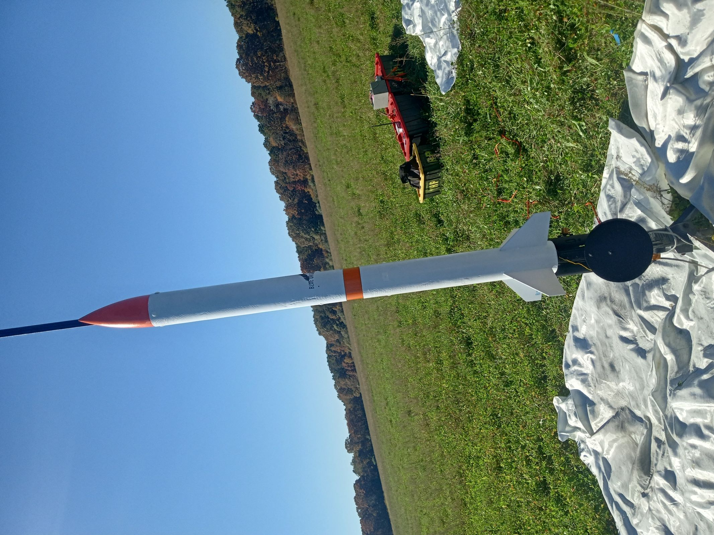
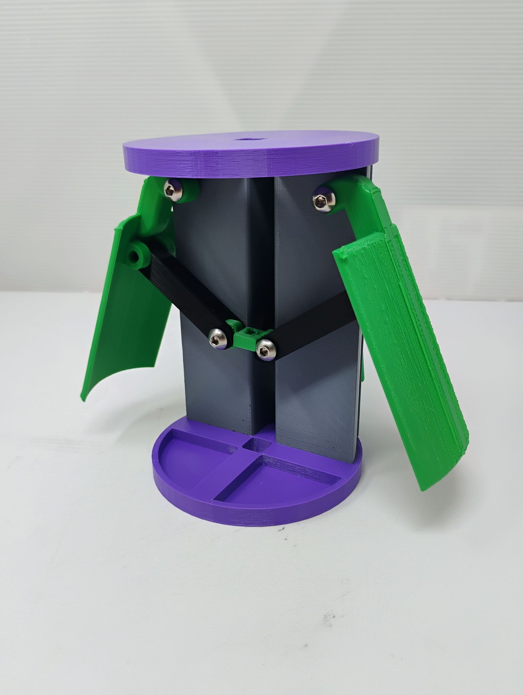
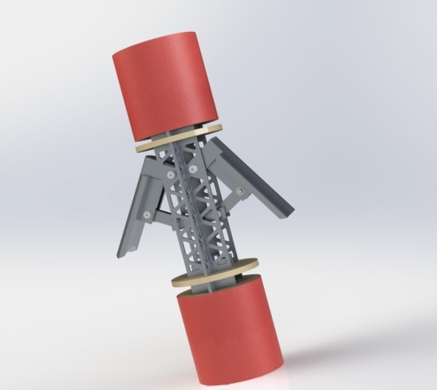
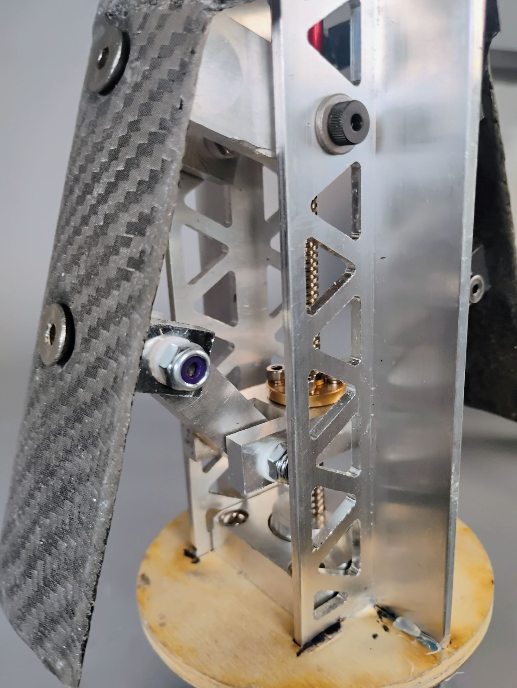
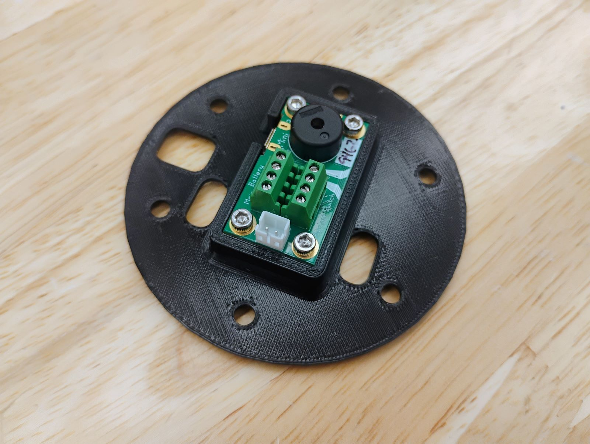
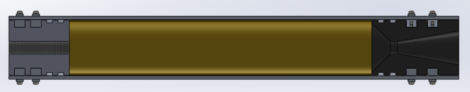
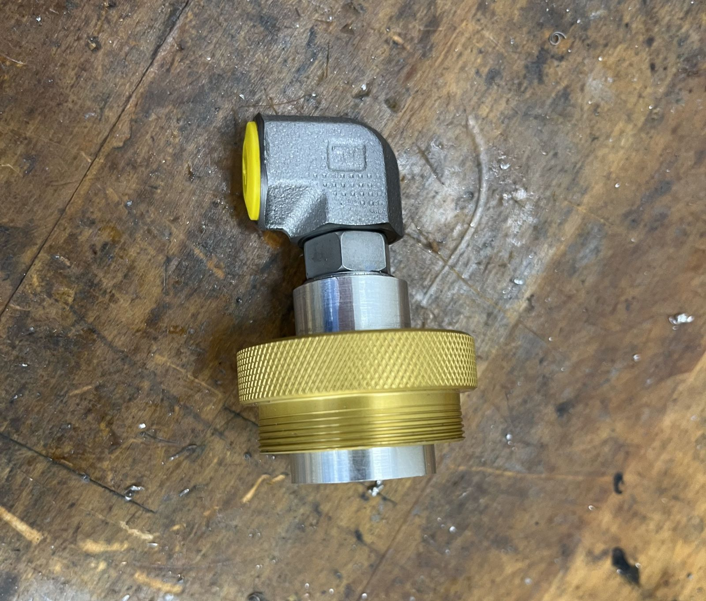
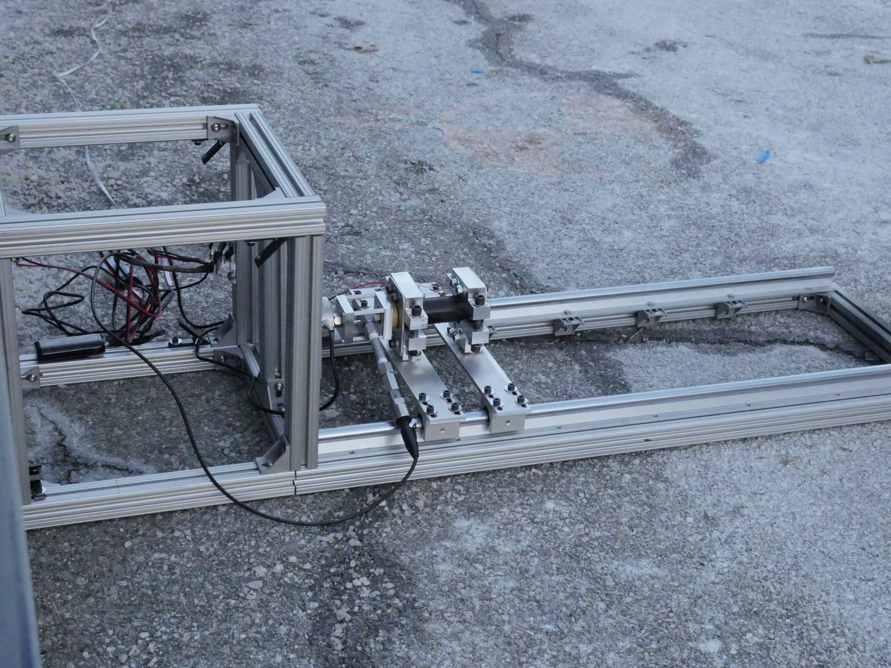
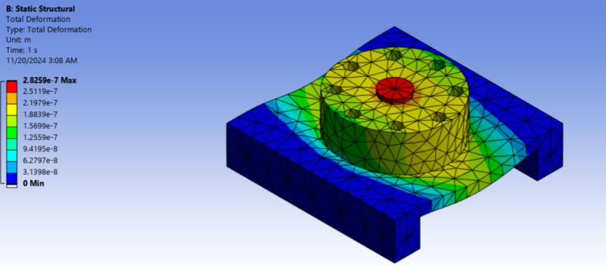

I served for two years as structures lead on Olin Rocketry, a student team passionate about aerospace engineering. Our focus is the construction of research rockets progressing toward high altitude flight in competitions and development flights.

In my first year on Olin Rocketry, I designed a system of mechanical airbrakes that enabled active control of a rocket’s altitude. Although not directly part of the primary flight system, this work provided valuable experience in integrating mechanical and electrical subsystems on a constrained aerospace platform.

We started with concept sketches and then moved to a detailed mechanical design using aluminum and carbon fiber composites for structural stiffness and minimal weight. The airbrakes use a stepper motor driving a Tr8x02 lead screw in a four-bar linkage to deploy carbon fiber flaps flush with the fuselage.
Because the airbrakes must carry both thrust and off-axis loads, the structure incorporated an aluminum T-bar wrapped in plywood and carbon fiber. CFD (computational fluid dynamics) and FEA analyses informed component sizing and deployment mechanisms.


I also designed a new mount for the avionics board that controls parachute deployment.

The core of any rocket is its motor. Olin Rocketry uses solid-fueled motors. The first motor I worked on failed due to an over-constrained nozzle, prompting me to deepen my understanding of propulsion design principles from sources like Rocket Propulsion Elements.

I machined a custom bulkhead with a boss port fitting to validate test processes, carefully cutting internal tapers with a ground boring bar. After pressure testing, the new fitting outperformed commercial off-the-shelf alternatives.

After a motor test damaged our original stand, I helped lead a team of first years to design a new one. The stand uses 8020 extrusions and linear rails to support motors from 29 mm to 54 mm in diameter, clamping to a load cell for thrust measurement.

I verified part strength via hand calculations and FEA studies, then CNC machined primary components, while team members fabricated remaining parts manually. I also helped implement safety procedures for dynamic testing.

Olin Rocketry continues to develop structural systems, avionics integration, and testing procedures toward future high-altitude flights. My contributions remain focused on structures reviews, test infrastructure, and mentoring new members.